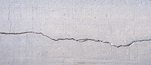
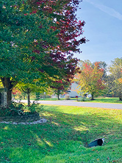

When you think about trees damaging property, you probably picture falling limbs or downed trunks after a storm. But threats to your home can also come from underground. Tree roots, though often overlooked, can have a serious impact on your home’s foundation over time. While trees offer shade, beauty, and property value, they must be placed and maintained thoughtfully to prevent long-term structural damage. Homeowners in coastal areas, such as Little Egg Harbor, face unique soil conditions that make this topic even more important. In this article, we’ll explore how tree roots grow, the warning signs of root-related foundation damage, and what steps you can take to protect your property. The safest and easiest way to ensure both your trees and your home stay healthy is to contact Ben Bivins Tree Experts, an experienced tree company in Little Egg Harbor.
How Tree Roots Affect Your Home
Tree roots are constantly on the hunt for water and nutrients. In doing so, they tend to grow laterally through the top few feet of soil, extending outward far beyond the canopy of the tree itself. If your home’s foundation is nearby, these roots may begin to encroach upon it. Contrary to popular belief, roots don’t typically “crack” concrete. Instead, they exploit pre-existing weaknesses—small fissures, gaps, or areas where the soil has shifted—slowly causing pressure that leads to foundation issues.
In sandy or clay-rich soils, like those found throughout Ocean County, the problem can be exacerbated. As roots absorb moisture, the surrounding soil may shrink or settle unevenly, contributing to shifts in the foundation. Over time, this can lead to doors that no longer close properly, cracks in walls, or even visible warping in the structure.
Signs That Roots May Be Affecting Your Foundation

Many signs of root-related damage are subtle at first. Being proactive is key, especially if you have large, mature trees near your home. Here are some common symptoms to look for:- Cracks in your foundation walls, especially ones that widen over time
- Uneven floors or visible sinking around the perimeter of your home
- Doors or windows that stick or no longer align
- Buckling concrete in sidewalks, patios, or driveways near large trees
- Water pooling or unusual drainage patterns near your foundation
If you spot any of these issues, it’s time to consult not only a structural expert, but also a tree company in Little Egg Harbor. A thorough assessment can determine if roots are the culprit—and what to do about them.
How to Prevent Tree Root Damage
Prevention begins long before a tree causes a problem. If you’re planting new trees, consider their mature size and how far their root systems may eventually reach. A general rule of thumb is to plant trees at least as far away from your foundation as the expected height of the tree. For example, a tree that will grow to be 40 feet tall should be at least 40 feet from your home.
For existing trees, root pruning, barrier installation, or guided growth techniques may help. In some cases, especially where the tree is already compromising the foundation, removal may be the best option. However, this decision should never be made lightly. Trees offer environmental benefits and value, and a skilled arborist can help you weigh your options.
Why Professional Help Is Essential
Attempting to cut roots or remove trees near a home without proper knowledge and equipment can result in unintended consequences. Severing roots improperly can destabilize a tree, increasing the risk of it falling during a storm. In other cases, roots may regrow aggressively or cause problems in other areas.
That’s why working with a qualified tree company in Little Egg Harbor is critical. Local professionals understand how native trees behave, how the soil interacts with roots, and how to assess threats to nearby structures. They have the tools and training to perform root evaluations, create long-term care plans, and take action safely if needed.

Protect Your Home and Your Trees
Your home’s foundation is one of its most important structural components. Protecting it means being vigilant not just above ground, but below the surface as well. Trees and homes can coexist peacefully when thoughtful care is taken from the start and when issues are addressed early.
If you’re unsure about the impact of nearby trees on your home, reach out to a tree company in Little Egg Harbor like Ben Bivins Tree Experts. With years of experience serving the coastal communities of New Jersey, we’re here to help you preserve the beauty of your trees without compromising your property’s safety.